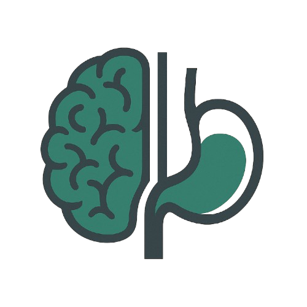

Gnossy · Registro diario
¿Cómo estás hoy?
Responde las cinco preguntas y guarda tu día en menos de un minuto.
Insight diario
Cuando guardes tu primer registro verás aquí cómo estás evolucionando.
Cómo estás hoy
¿Cuán triste te has sentido hoy?
0 · Nada triste10 · Extremadamente triste
¿Cuán estresado/a te has sentido hoy?
0 · Nada estresado/a10 · Extremadamente estresado/a
¿Cuán fatigado/a te has sentido hoy?
0 · Nada fatigado/a10 · Extremadamente fatigado/a
¿Cómo valorarías la calidad de tu sueño?
0 · Muy mala10 · Muy buena
¿Cuán intensas han sido tus molestias digestivas hoy?
0 · Ningún síntoma10 · Muy intensos
Recomendaciones de hoy
Guarda tu registro para ver tus recomendaciones personalizadas.